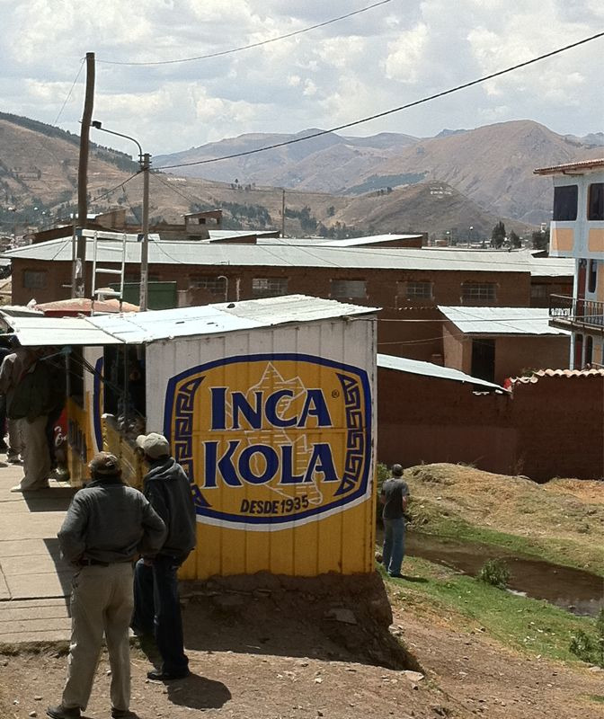

Sun, 03 Oct 2010 13:40:40 · Peru · travel · city · drinks
when in peru we drink inca kola sadly not a

When in Peru, we* drink Inca Kola…
*Sadly, not a soda drinker myself, I haven’t tried it, but it seems like it’s more popular than Coke here.